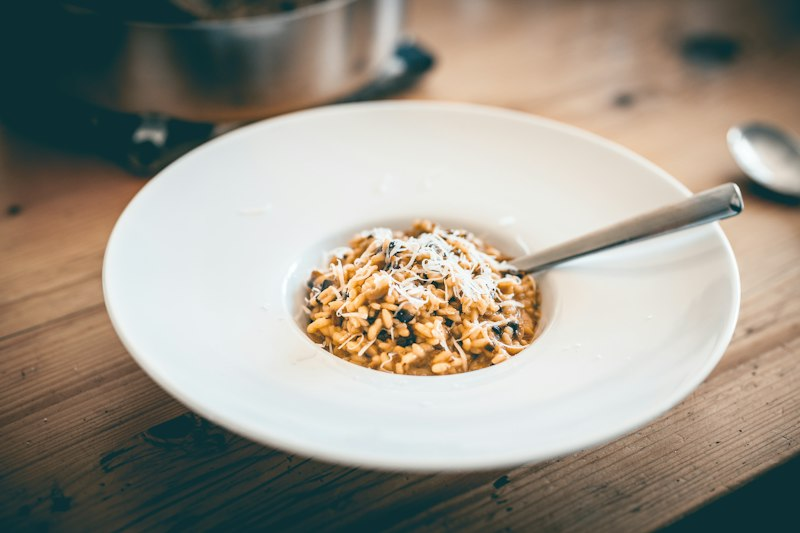
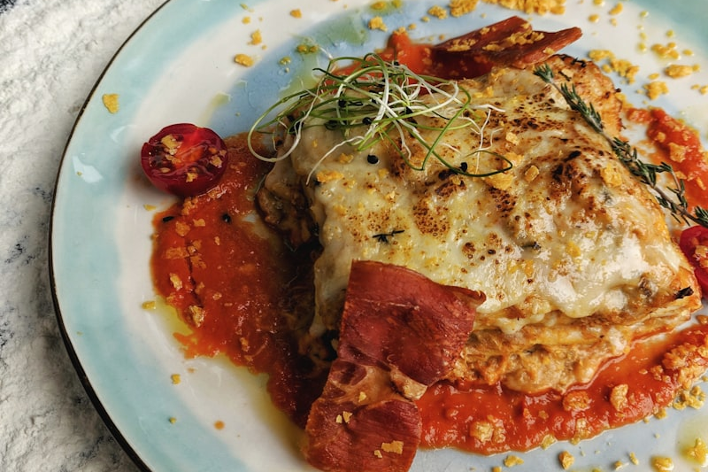
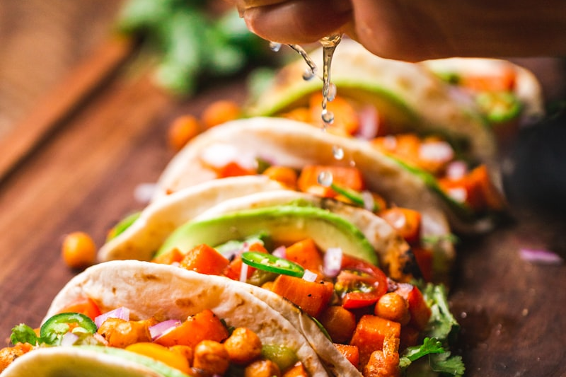
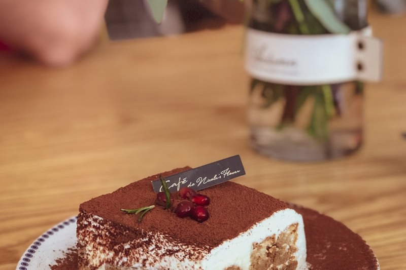
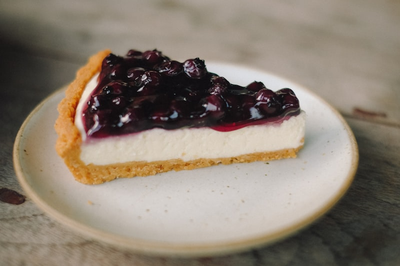

SaladoRisotto Cremoso de Hongos y Parmesano
Arroz arborio al dente con sofrito de hongos frescos y secos hidratados, vino blanco seco y una mantecatura final con manteca fría y parmesano que logra una cremosidad irresistible.
Descubrí recetas caseras probadas, creadas con ingredientes cotidianos y explicaciones claras. Elegí tu categoría favorita y descargá cada ficha completa en formato PDF para tenerla siempre a mano en tu cocina.
Seleccioná una categoría para explorar los platos salados o nuestras dulces tentaciones:

SaladoArroz arborio al dente con sofrito de hongos frescos y secos hidratados, vino blanco seco y una mantecatura final con manteca fría y parmesano que logra una cremosidad irresistible.

SaladoCapas generosas de pasta casera intercaladas con ragù boloñesa tradicional cocinado a fuego lento, bechamel cremosa a la nuez moscada y una cubierta dorada de mozzarella y queso rallado.

SaladoUna base quebrada crocante rellena con crema fresca espesa, huevos de granja, bastoncitos de panceta ahumada dorada y el sabor inconfundible del auténtico queso Gruyère horneado.

DulceEl postre más emblemático de Italia: suave crema de queso mascarpone batida con yemas y claras montadas, capas de vainillas embebidas en café espresso fuerte y cacao amargo puro.

DulceTarta horneada a baño María con una base crujiente de galletas a la manteca, corazón aterciopelado de queso crema aromatizado con limón y vainilla, y salsa casera de moras y frambuesas.
Coulant irresistible de chocolate semiamargo al 70% de cacao: exterior de bizcochuelo esponjoso recién horneado que al cortar libera un centro tibio y sedoso de chocolate fundido.
Cocinera Profesional & Divulgadora Gastronómica
¡Hola! Soy Valentina. Comencé este espacio culinario con la convicción de que la buena cocina no requiere técnicas imposibles ni electrodomésticos extravagantes, sino buenos ingredientes, paciencia y amor por el fuego.
Cada una de las recetas publicadas en este recetario ha sido probada, perfeccionada y documentada meticulosamente en fichas PDF coleccionables para que puedas cocinarlas en tu hogar con total garantía de éxito.
¿Tenés dudas sobre alguna preparación, querés sugerir una nueva receta o dejar tu comentario? Completá el siguiente formulario y nos pondremos en contacto a la brevedad.